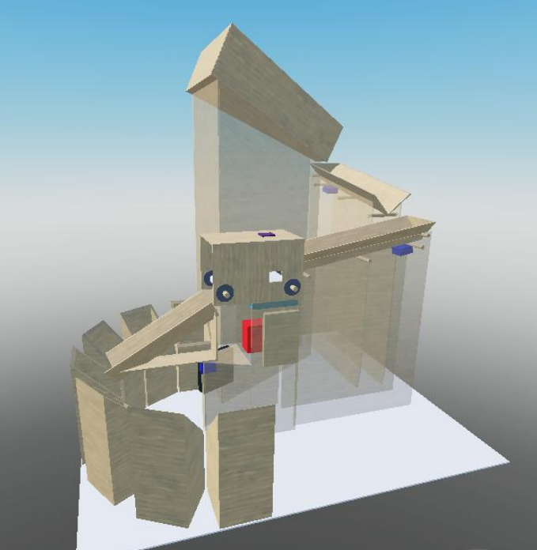
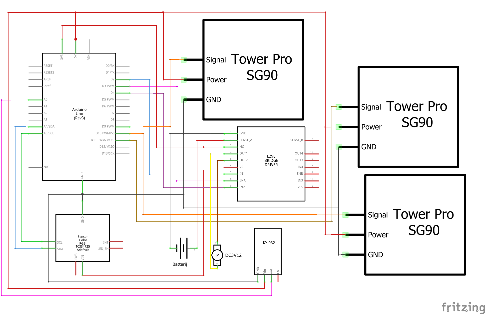
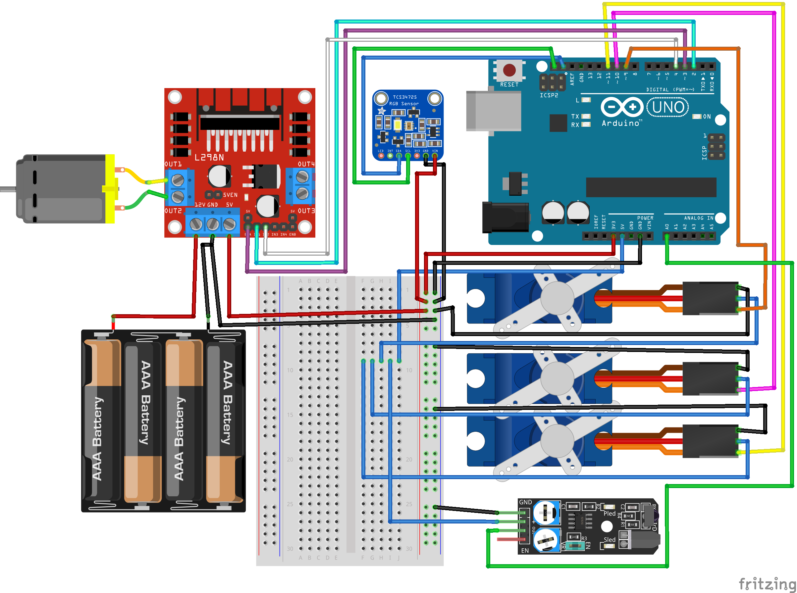

Kleur Sorteermachine
Een automatische machine die legoblokjes sorteert op kleur, ontworpen voor kleurenblinde gebruikers.

Projectinformatie
Rol: Ontwerp & programmering
Context: GIP 2024–2025
Doel: Ondersteuning voor kleurenblinde gebruikers
Gebruikte technologie
Werking van de machine
De machine sorteert legoblokjes automatisch op basis van kleur. Via vibrerende V-kanalen worden de blokjes één per één naar een transportband geleid. Een kleurensensor detecteert de kleur, waarna een servomotor het blokje naar het juiste bakje stuurt.
Het systeem wordt aangestuurd door een Arduino UNO en maakt gebruik van meerdere motoren en sensoren om nauwkeurig en betrouwbaar te werken.
Code
Arduino-code voor kleurdetectie en aansturing
#include <Wire.h>
#include <Adafruit_TCS34725.h>
#include <Servo.h>
Adafruit_TCS34725 tcs = Adafruit_TCS34725(TCS34725_INTEGRATIONTIME_600MS, TCS34725_GAIN_1X);
Servo myServo;
#define ENA 3
#define IN1 2
#define IN2 4
const int TOLERANTIE = 12;
const int WAARDEROODR = 180;
const int WAARDEROODG = 44;
const int WAARDEROODB = 46;
const int WAARDEBLAUWR = 30;
const int WAARDEBLAUWG = 86;
const int WAARDEBLAUWB = 139;
const int WAARDEGROENR = 50;
const int WAARDEGROENG = 131;
const int WAARDEGROENB = 63;
const int WAARDEGEELR = 101;
const int WAARDEGEELG = 98;
const int WAARDEGEELB = 43;
const int WAARDEORANJER = 157;
const int WAARDEORANJEG = 54;
const int WAARDEORANJEB = 36;
void setup() {
Serial.begin(9600);
if (!tcs.begin()) {
Serial.println("Kleursensor niet gevonden.");
while (1);
}
myServo.attach(9);
myServo.write(90);
pinMode(IN1, OUTPUT);
pinMode(IN2, OUTPUT);
pinMode(ENA, OUTPUT);
digitalWrite(IN1, HIGH);
digitalWrite(IN2, LOW);
analogWrite(ENA, 200);
}
void loop() {
uint16_t r, g, b, c;
float red, green, blue;
tcs.getRawData(&r, &g, &b, &c);
red = r / (float)c * 255.0;
green = g / (float)c * 255.0;
blue = b / (float)c * 255.0;
if (red >= WAARDEROODR - TOLERANTIE &&
red <= WAARDEROODR + TOLERANTIE &&
green >= WAARDEROODG - TOLERANTIE &&
green <= WAARDEROODG + TOLERANTIE &&
blue >= WAARDEROODB - TOLERANTIE &&
blue <= WAARDEROODB + TOLERANTIE) {
myServo.write(0); // Rood
}
}
Ontwerp & schema’s

